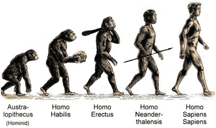

Intro 2 Inf Sys
Alp Eren Akyüz
150210303
Evolution of homo species
The image below is a link, try it. 
You can find the source of the image by clicking the link: Biology Online.
| Homo habilis | Homo Erectus | Homo neanderthalensis | Homo sapiens |
|---|---|---|---|
| Handy man | Upright man | Neandertal | Wise man |
| ∼2.3-1.65 million years ago | ∼2 million years ago | ∼40.000 years ago | ∼13.000 years ago |